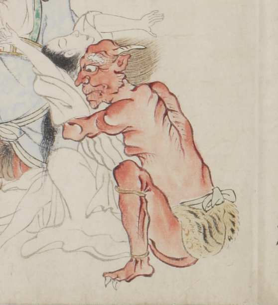

赤い体の鬼。白い角と、薄い頭髪が生えている。体は筋肉質だが何重にも皺が寄っている。鼻が高く、年をとった顔のように見える。虎皮の腰巻きをし、白色の帯を巻いている。女の幽霊を抱きしめている。
出典：親書誌：U426_nichibunken_0058：地獄草紙絵巻；ジゴクゾウシエマキ／日付：2006／資源識別子：U426_nichibunken_0058_0011_0000
Copyright (c)2010- International Research Center for Japanese Studies, Kyoto, Japan. All rights reserved.